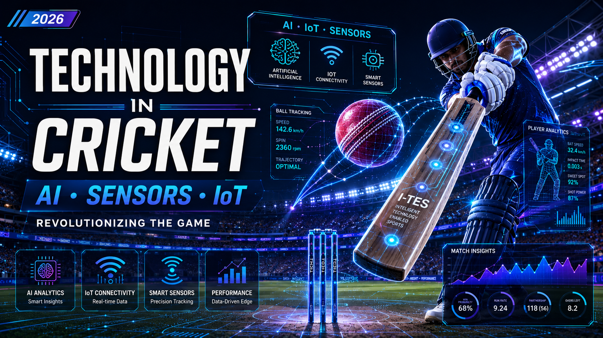

Technology in Cricket: AI, Sensors & IoT Revolutionizing the Game (2026)

Cricket, once a game of pure instinct and judgment, is rapidly transforming into a technology-driven sport. From grassroots club cricket to the international stage, cutting-edge innovations like Artificial Intelligence (AI), Internet of Sports Things (IoST), and advanced sensors are reshaping how the game is played, trained for, and officiated.
The year 2026 has witnessed unprecedented technological advancements in cricket. Teams are now using AI to analyze player performance, predict match outcomes, and even simulate bowling actions. Here's a comprehensive look at the latest tech news making waves in the cricketing world.
AI-Powered Bowling: The TruMan 3 Revolution
The Pakistan Cricket Board (PCB) has become the world's first cricket board to adopt the AI-powered TruMan 3 bowling machine at the National Cricket Academy. This isn't your average bowling machine.
TruMan 3 AI Bowling Machine
The TruMan 3 displays a high-contrast LED animation of a bowler's action on a front screen. This allows batters to read the bowler's release point and timing just as they would in a real match—a feature that traditional machines lack.
What It Can Do:
- Customize deliveries: Coaches can program pace, line, length, swing, bounce, and even delivery height.
- Recreate match situations: Individual balls, overs, and entire spells can be saved and replayed.
- Simulate specific bowlers: Players can prepare against the style and action of specific opponents.
"This machine helps prepare us for the challenges of modern-day cricket. Because the ball is released in sync with the bowler's action shown on the screen, you have to maintain the same timing that you would in an actual match."
— Salman Ali Agha, Pakistan Cricketer
AI Umpiring: The Future of Decision Review Systems
In an Australian-first trial, AI-powered ball-tracking technology is being used in Darwin's women's division one cricket competition to review leg before wicket (LBW) decisions.
Fulltrack AI Umpiring System
The Fulltrack AI system uses a high-resolution camera strapped to an umpire's chest. It calculates the approximate trajectory of a delivery by drawing from recordings of about 1 million other balls.
Benefits:
- Cost-effective: Uses smartphone cameras instead of expensive multi-camera systems.
- Reduces disputes: Aims to eliminate perceptions of bias and quell arguments.
- Valuable coaching data: Provides accurate pitch maps and data for bowlers and batters.
"About 85 per cent of the time, even at the club level, we are reinforcing the umpire's decision."
— Arjun Verma, Fulltrack AI CEO
Automated Stumping Detection: The IoST Solution
Researchers have developed an IoST-based Automated Stumping Detection System for error-free decision-making.
IoST Automated Stumping System
Time-of-Flight (ToF) sensors accurately determine a batter's position relative to the popping crease. Accelerometers and red LEDs provide real-time data collection and visual feedback, while cloud technology enables data analysis.
Goal: To reduce delays and inconsistencies in stumping decisions by providing an instant "out" or "not out" decision, thereby reducing dependence on third umpire video referrals.
Computer Vision: Affordable Analytics for All
A significant barrier to adopting technology in cricket has been the high cost of systems like Hawk-Eye. Researchers are now developing single-camera, budget-minded systems that can deliver detailed ball-tracking data.
Single-Camera Ball Tracking
A bespoke computer-vision pipeline using a tuned YOLOv5 detector, a linear Kalman filter, and custom homography to map field coordinates from standard video.
The Goal: To provide grassroots clubs and community teams with access to objective performance metrics without stretching their budgets.
Automated Scorecards: CNN to the Rescue
Researchers have proposed a system to automate cricket scorecards using Convolutional Neural Networks (CNN).
CNN Scorecard Automation
A CNN model is trained on a cricket match dataset to recognize and analyze different features of the game, such as runs scored, wickets taken, and player performance.
Benefits:
- Reduces time and effort for statisticians and broadcasters.
- Ensures accurate, up-to-date scorecards with an accuracy of 95%.
Sensor-Embedded Bats: The Future of Shot Analysis
A low-cost, flexible, impact-driven triboelectric sensor (I-TES) has been developed for real-time sports monitoring.
I-TES Sensor-Embedded Bat
Embedded on a cricket bat, the sensor detects bat-ball contact and measures impact forces. It produces distinct signals for different shots, demonstrating potential for shot classification and player performance evaluation.
Performance:
- Voltage sensitivity: 12.98 V/N
- Current sensitivity: 30.18 nA/N
- Stable output: Maintained for over 15,000 working cycles
The Future of Cricket
These innovations represent just the beginning. As technology continues to evolve, we can expect to see even more sophisticated systems that democratize access to elite-level analytics, enhance the accuracy of decision-making, and provide new ways for players to train and improve.
Key Technologies to Watch:
- AI-powered coaching assistants for personalized training
- Wearable sensors for real-time player monitoring
- Virtual Reality (VR) for immersive match simulations
- Blockchain for transparent and secure match data
The integration of technology in cricket is not just about improving performance—it's about making the game fairer, more accurate, and more exciting for everyone involved.